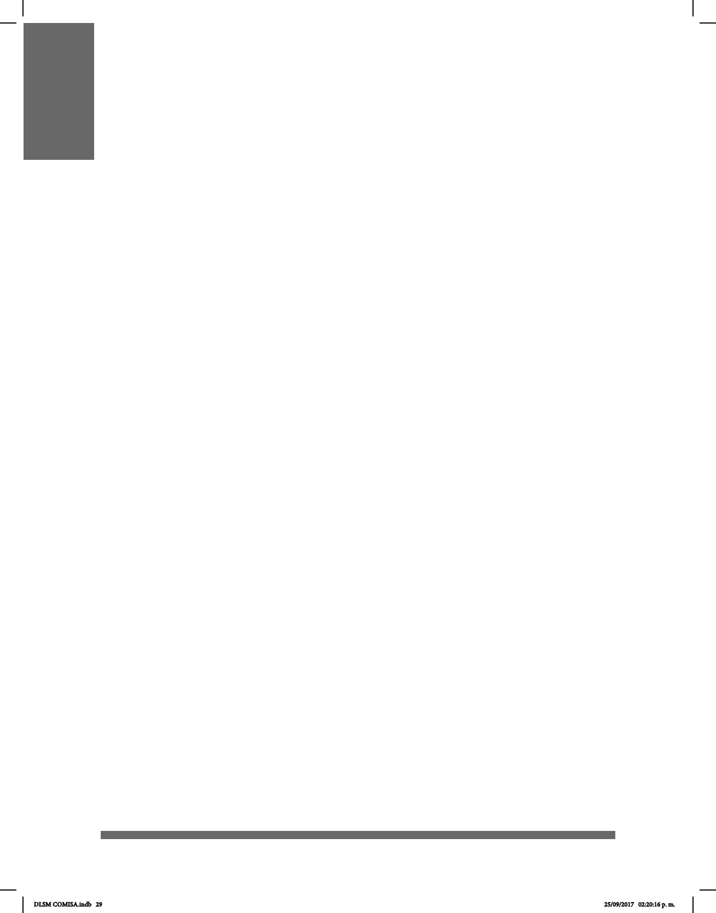

29
AVANCES Y RETOS PARA LA COMUNIDAD SORDA
La condición política de las personas sordas en la sociedad ha mejorado de manera
importante desde 1931, pues como indica Don Ignacio Sierra, a pesar de tener una
idea de identidad minoritaria cultural y lingüística cada vez más han aumentado los
benecios social y educativo.
En 1931 se estableció la Asociación Deportiva Silente de México y fueron los primeros
atletas de México en marchar en la Av. Juárez el 20 de noviembre con el estandarte
de Huet. Hubo otras organizaciones que se sumaron, como el Club Eduardo Huet,
formado por quienes fueron los estudiantes de Escuela Nacional de Sordomudos,
Asociación de Sordomudos, Federación Mutualista de Sordomudos, Club
Deportivo de Sordomudos de México y por último, en dos periodos, la Asociación
Deportiva Silente de México (ADSM). Cuando el Club Huet creció se cambió el nombre
por el de Asociación Mexicana de Sordomudos; tiempo después, diversas asociaciones
de y para la comunidad sorda de la República Mexicana decidieron unirse y toman el
nombre de Asociación Mexicana de Sordos (AMS), que después se modica y queda
como Federación Mexicana de Sordos (FEMESOR), aliada a la Federación Mundial
de Sordos (WFD por sus siglas en inglés). Hay dos asociaciones a nivel nacional:
Confederación Nacional de Silentes de México (CONASIMEX) y Unión Nacional de
Sordos de México (UNSM).
Hay información que se ha consensuado con la comunidad sorda acerca de
ciertos acontecimientos positivos y emocionantes, sustentados, en gran medida, en los
logros de diversas asociaciones en su papel de abogar por los derechos de las
personas sordas, así como luchar por la igualdad de oportunidades y la justicia en el
desarrollo inclusivo en la sociedad, facilitado por el cambio en el clima político. Entre estas
observaciones están:
• El reconocimiento de la LSM (Lengua de Señas Mexicana) como lengua ocial en
la Ley General para la Inclusión de las Personas con Discapacidad : “Artículo 14. La
Lengua de Señas Mexicana es reconocida ocialmente como una lengua nacional y
forma parte del patrimonio lingüístico con que cuenta la nación mexicana”.
• La Ley para la Integración al Desarrollo de las Personas con Discapacidad del Distrito
Federal, Capítulo Cuarto, Derecho a la Educación: “Crear y operar centros educativos
en los que se instruya la Lengua de Señas Mexicana, a las personas que lo requieran”.
Esta ley se hizo para que las asociaciones de y para la comunidad de personas sordas
en México pudieran ser un grupo reconocido y visible con derecho a su propia lengua
que es la base de su identidad y el desarrollo de la autoestima positiva.
• El reconocimiento de la LSM en la Constitución de la Ciudad de México como
patrimonio lingüístico, que en su artículo 8, Ciudad Educadora y del Conocimiento, así lo
establece: “La inclusión de la lengua de señas en la Constitución simboliza el
reconocimiento y la disposición por el Gobierno para apoyar su desarrollo y proteger
DLSM COMISA.indb 29 25/09/2017 02:20:16 p. m.